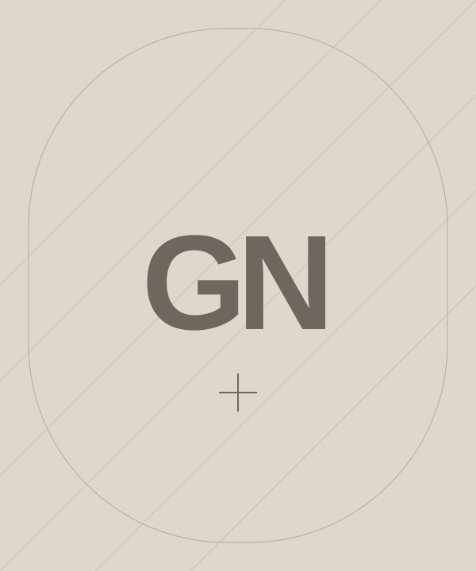
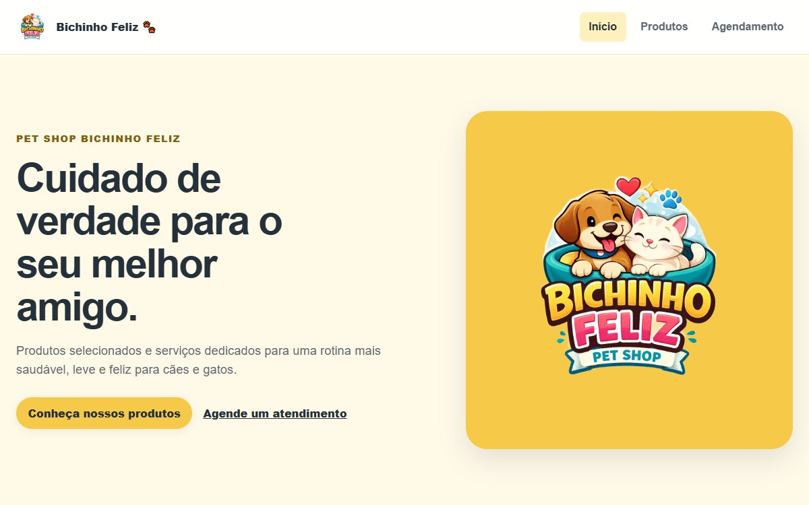
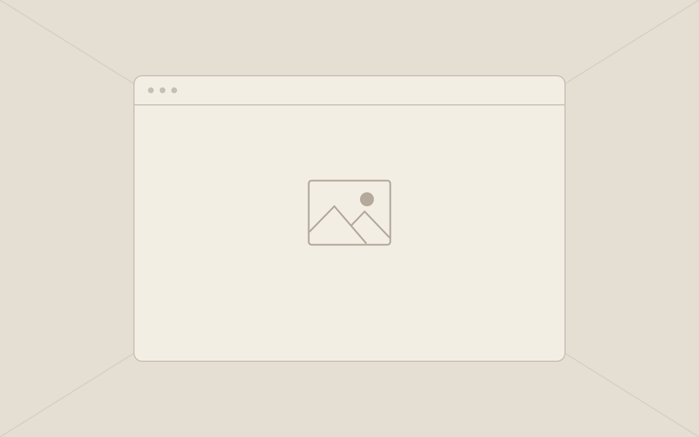
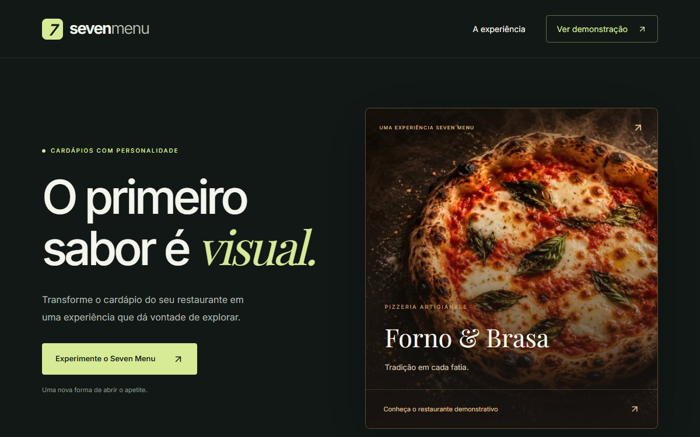

Education
Information Systems Development
In progress

Hello, I’m
01 / A LITTLE ABOUT ME
I’m an Information Systems Development student with a passion for technology. I create digital experiences that bring together design, functionality and purpose.
I’m constantly learning, turning every project into a lesson and every challenge into an opportunity to grow.
Education
In progress
Experience
Personal and academic projects focused on web development.
Goal
Finding a front-end opportunity and growing as a developer.
02 / MY TOOLBOX
Technologies that are part of my journey of learning and creating.
03 / FROM CONCEPT TO INTERFACE
A selection of ideas turned into digital experiences.
Made to make a difference.
A business website and a catalogue of pet shop products and services.

Financial planning, goals, contributions and wealth tracking in a digital experience.

A digital menu experience for restaurants, featuring the Forno & Brasa pizzeria demo.
A concept streetwear store with a product catalogue and a premium visual identity.
Experiments, studies and a little more code.
04 / THE NEXT PROJECT
An idea, a project or an opportunity? Let’s talk about what we can build.
Available for opportunitiesGreat conversations spark great ideas.
GitHubCode, projects and learningLinkedInConnections and opportunitiesWhatsAppChat on WhatsApp